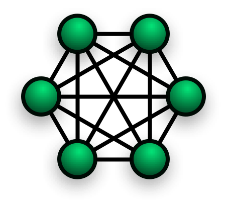

Topologie di rete
| Nome | Descrizione | Immagine | Vantaggi e svantaggi |
|---|---|---|---|
| Rete full connecting |
Una rete si definisce full connecting (punto a punto), quando tutti i device collegati alla rete hanno un cavo per ogni nodo della rete. Cioè quando ogni computer o device può parlare direttamente con tutti gli altri computer. |
 | VANTAGGI:1. In caso di un guasto su un cavo, tutti gli altri computer possono parlarsi.2. Ogni computer può parlare con un altro computer in un solo passo. SVANTAGGI:1. Se la rete diventa grande il costo diventa enorme.2. I computer che possono partecipare a questa rete sono speciali, cioè, possono gestire tante schede di rete. |
Rete a stella |
Una rete si definisce a stella, quando tutti i device sono collegati ad un unico computer universale. Cioè quando ogni computer o device può parlare ad un unico computer. |
 |
VANTAGGI:1. È una rete semplice.2. È adatta a tutti i normali computer. 3. È facile aggiungere nuovi elementi alla rete. SVANTAGGI:1. Questa rete ha un singolo punto di fallimento (SPOF), cioè sesi rompe il nodo centrale nessuno più riesce a comunicare. 2. Il numero di nodi della rete dipende dalle caratteristiche del nodo centrale. 3. L'uso di un'app è pericoloso perché consente a uno degli altri nodi collegati di leggere i messaggi scambiati. |
Rete ad anello |
Una rete ad anello è quella rete in cui ogni nodo è collegato a due altri nodi, normalmente questa rete ha un verso di comunicazione |  |
VANTAGGI:È una rete espandibile e semplice.SVANTAGGI:1. Se si rompe un nodo o un cavo la rete è bloccata.2. Per poter usare la rete bisogna aspettare il proprio turno. |
| Rete a Bus | Una rete a Bus e quella rete in cui tutti i nodi sono collegati tra loro per mezzo di un Bus. Questo cavo consente ha tutti i nodi di parlare contemporaneamente senza dove aspetare un turno. |  |
Vantaggi1. E facile aggiungere nuovi nodi. 2. I computer collegati sono semplici.Svantaggi1. La rottura del Bus blocca tutta la rete.2 Il trafico causato da un nodo puo rallentare tutti gli altri. |
| Rete ad Albero | Una rete ad albero e una rete in qui alcuni nodi si comportano da responsabili della rete. |  |
Vantaggi1.E una rete semplice in qui e possibile definire dei ruoli. 2.I nodi si possono faccilmente aggiungere con un impato limitato al nodo padre.Svantaggi1.La comunicazzione tra due nodi puo richiedere molti passi. 2.La rottura di un nodo bloca tutte le comunicazioni ha valle. |
Sudivisioni in base all'estensione
| LAN |  |
Local area networkIn informatica e telecomunicazioni una Local Area Network (LAN) (in italiano rete in area locale, o rete locale) è una rete informatica di collegamento tra più computer, estendibile anche a dispositivi periferici condivisi, che copre un'area limitata, come un'abitazione, una scuola, un'azienda o un complesso di edifici adiacenti. Si differenzia dalle Wide Area Network (WAN) non solo per l'estensione geografica più limitata ma anche perché consente migliori prestazioni in termini di velocità di trasferimento dei dati e non richiede di utilizzare circuiti dedicati su tratte telefoniche (leased line).Vantaggi1-E una rete economica.2-E una rete semplice da realizzare.Svantaggi1-Per come e costruita non può essere molto estesa. |
| CAN | campus area networkCon il termine Campus Area Network (CAN), si intende la rete interna ad un campus universitario, o comunque ad un insieme di edifici adiacenti, separati tipicamente da terreno di proprietà dello stesso ente, che possono essere collegati con cavi propri senza far ricorso ai servizi di operatori di telecomunicazioni. Tale condizione facilita la realizzazione di una rete di interconnessione ad alte prestazioni ed a costi contenuti. |
|
| MAN | Metropolitan area networkSi tratta di una rete di trasporto storicamente nata per fornire servizi di tv via cavo alle città dove c'era una cattiva ricezione terrestre. In pratica un'antenna posta su una posizione favorevole, distribuiva poi il segnale alle case mediante cavo. Prima la cosa è avvenuta a livello locale, successivamente si sono create grosse aziende che hanno richiesto di cablare intere città, soprattutto negli Stati Uniti. Quando il fenomeno Internet è esploso, queste società hanno ben pensato di diffondere la comunicazione via Internet anche attraverso il cavo TV utilizzando la struttura preesistente. Tipicamente questa struttura, attualmente, utilizza la fibra ottica come mezzo trasmissivo di collegamento e topologie di rete ad anello detti appunto anelli metropolitani con funzionalità di backbone metropolitano da e verso le sottoreti e le utenze interne all'area metropolitana stessa. Dal punto di vista protocollare, attualmente quasi tutte le MAN operano su collegamenti Gigabit Ethernet mentre in passato si sono utilizzati anche ATM, FDDI e SMDS. |
|
| WAN | Wide area networkSi tratta più precisamente di una rete di trasporto che può connettere fra loro più reti locali e/o metropolitane collegate tra loro da backbone. Molte WAN sono costruite per una particolare organizzazione e sono private come ad esempio la rete GARR. La più grande WAN mai realizzata, Internet, una rete di computer che copre l'intero pianeta, è invece ad accesso pubblico. La funzionalità delle WAN è generalmente la connessione tra host. Questa struttura forma una communication subnet o semplicemente subnet, che in genere appartiene ad una compagnia telefonica o a un ISP. La subnet si compone di linee di trasmissione e di elementi di commutazione. Le linee di trasmissione spostano i bit e possono essere realizzate in fibra ottica, con collegamenti radio, in rame o altro, mentre gli elementi di commutazione sono computer specializzati che collegano più linee di commutazione (router ad esempio). Per il trasporto dati su tali reti si utilizzano in genere protocolli di rete come Frame Relay e ATM o anche tecniche PDH e SDH. |
|
| WLAN | wifi/wireless lanA wireless local area network (WLAN) links two or more devices using some wireless distribution method (typically spread-spectrum or OFDM radio), and usually providing a connection through an access point to the wider Internet. This gives users the ability to move around within a local coverage area and still be connected to the network. Most modern WLANs are based on IEEE 802.11 standards, marketed under the Wi-Fi brand name. WLANs were once called LAWNs (for local area wireless network) by the Department of Defense. Wireless LANs have become popular in the home due to ease of installation, and in commercial complexes offering wireless access to their customers; often for free. New York City, for instance, has begun a pilot program to provide city workers in all five boroughs of the city with wireless Internet access. |